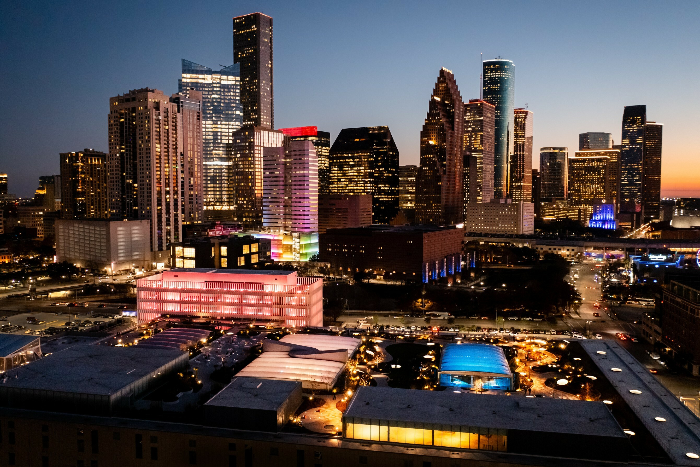
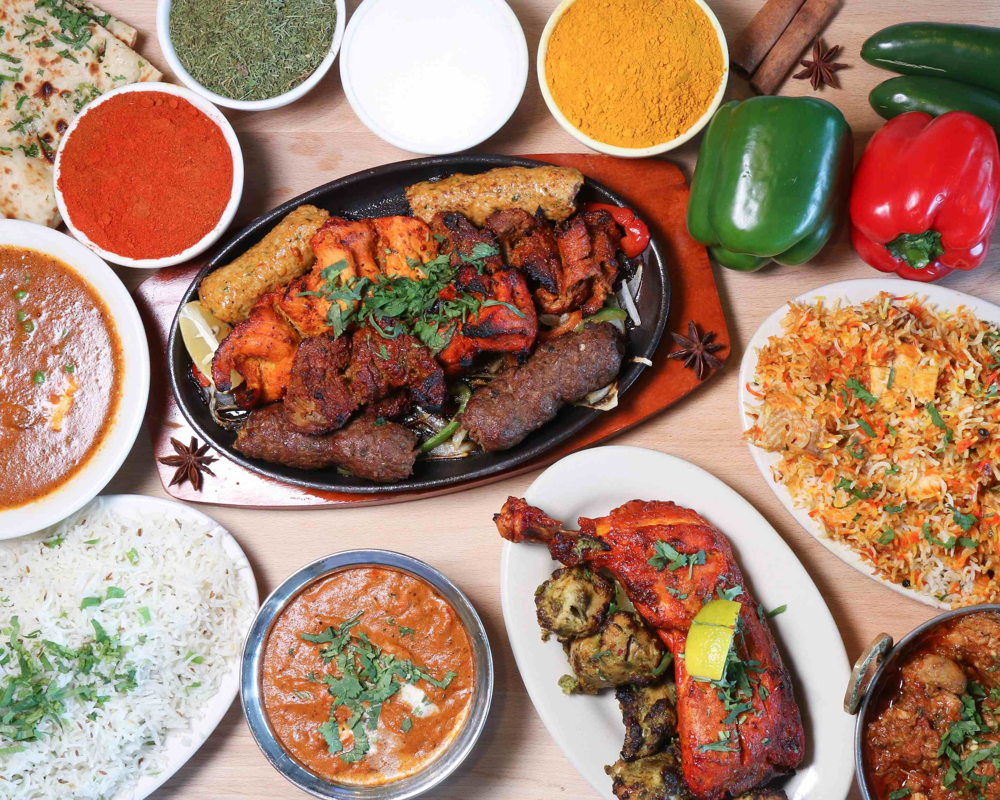
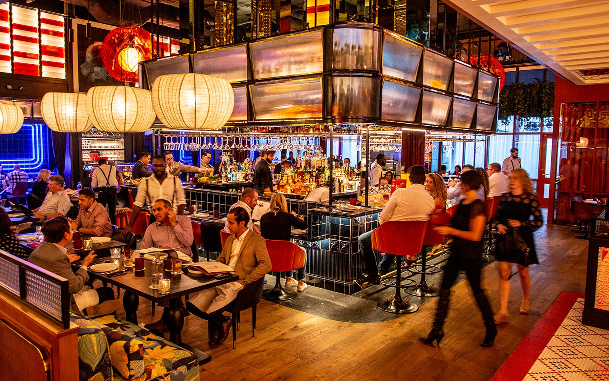
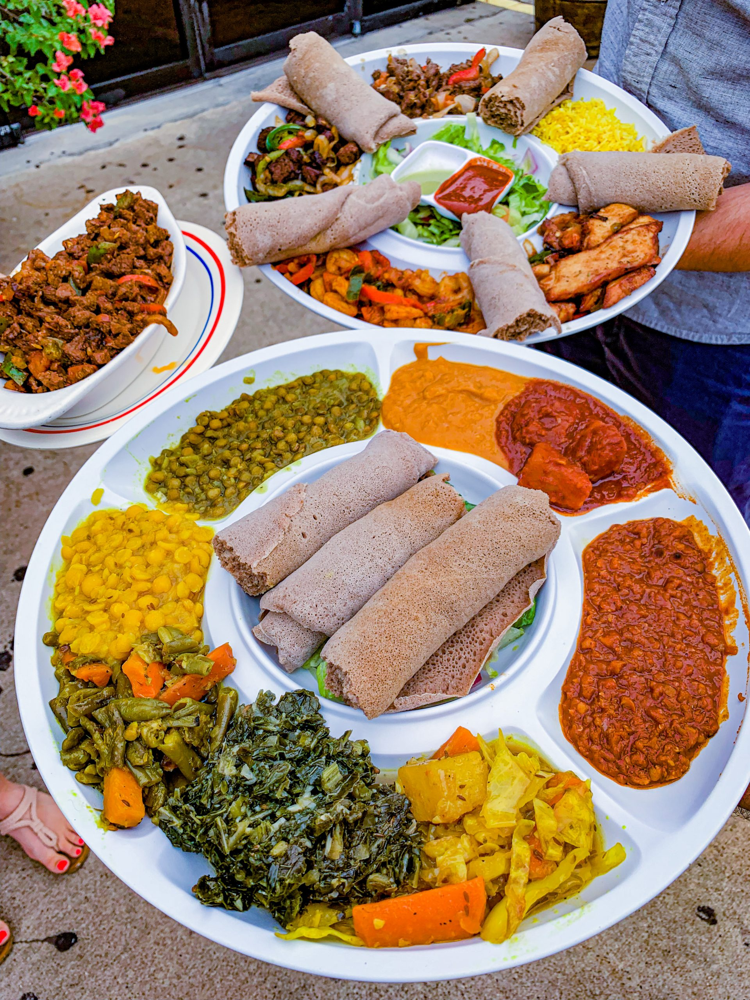

Let's go to houston
fun things to do houston
Theres alot of cool places to visit in houston especially since the weather is usually nice. One place I would visit is the space center it has over 400 space artifacts and exhibits. Another place you need to visit is houston's museum of natural science general admissionns.
places to eat in houston(aga's)



- Grilled Goat Chops
- Shrimp Makhani
- beef curries
As you can see aga's offers alot of different type of foods and there all really good Just as the food avoids clichés, so does the setting: Aga's Restaurant & Catering is one the highest rated Indian/Pakistani Restaurants and caterer in Houston. We have been serving authentic Indian and Pakistani cuisine in Houston since 2001.